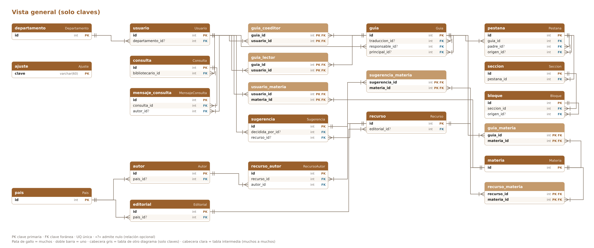
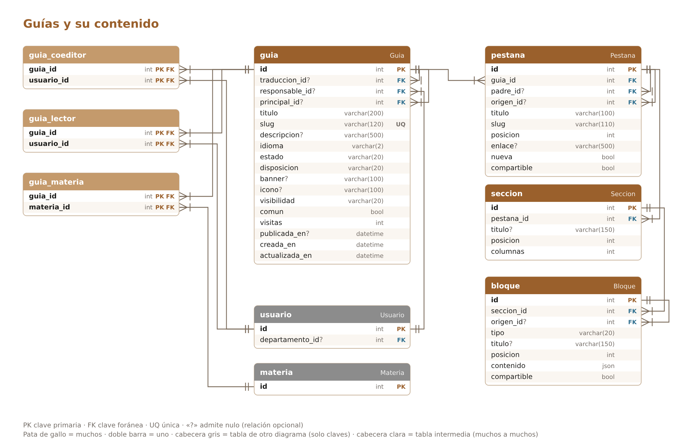
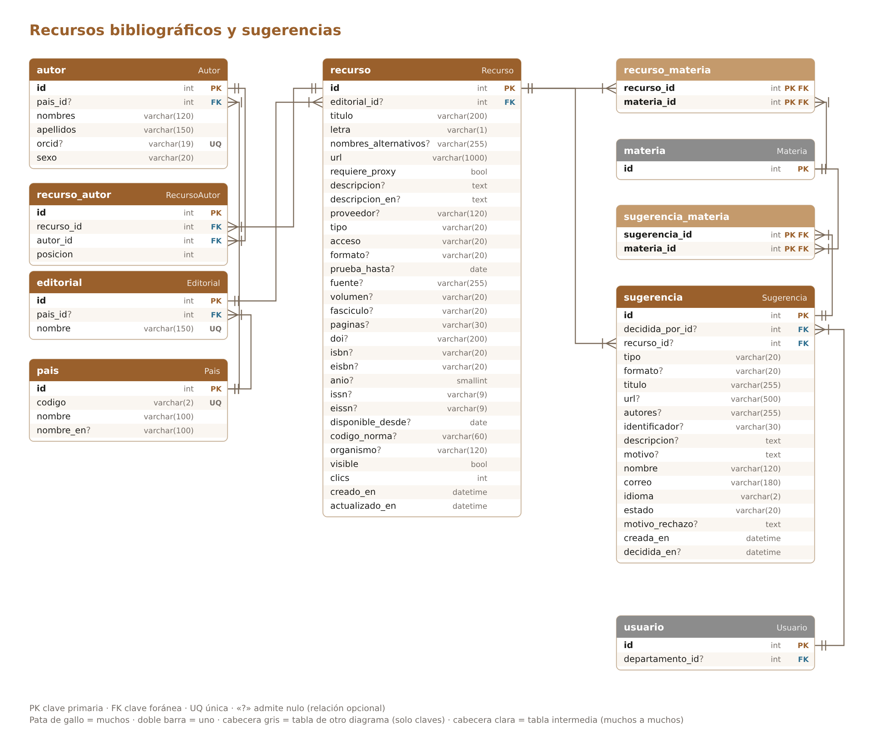
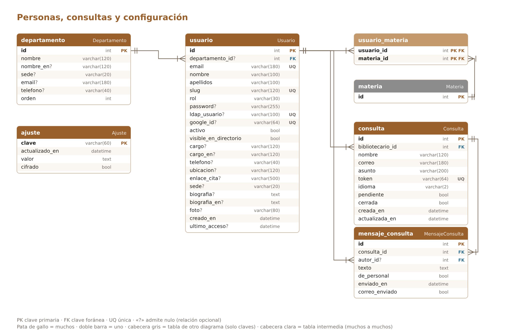

2. Modelo de datos
La base de datos (MySQL 8.4, utf8mb4_unicode_ci) tiene
22 tablas: 16 entidades de Doctrine y 6 tablas intermedias de relaciones
muchos a muchos. El esquema lo definen las entidades de
src/Entity y lo crean las migraciones de
migrations/; el detalle de cada columna está en el capítulo 4.
2.1 Diagrama entidad-relación#
Los diagramas se generan desde las entidades con
scripts/generar-diagrama-er.py, así que siempre
corresponden al código. Las versiones vectoriales (SVG) están en
docs/tecnico/img/.
Cómo leerlos. Cada caja es una tabla, con sus columnas, tipo y claves (PK primaria, FK foránea, UQ única). Un «?» indica que la columna admite nulo; en una clave foránea, que la relación es opcional. Las líneas unen la clave foránea (lado «muchos», pata de gallo) con la clave primaria de la tabla referida (lado «uno», doble barra). Las cabeceras claras son tablas intermedias y las grises, tablas de otro diagrama que se muestran solo con sus claves.
Vista general#
Todas las tablas, solo con sus claves.

Guías y su contenido#
Una guía tiene pestañas; cada pestaña, secciones; cada sección, bloques. Las guías se relacionan con el usuario responsable, los coeditores y los lectores asignados, y con sus materias.

Recursos bibliográficos y sugerencias
La lista A-Z (recurso) con sus
autores (en orden, por recurso_autor),
editorial, país y materias. Una
sugerencia del público, al aprobarse, queda enlazada al
recurso que creó.

Personas, consultas y configuración
El personal (usuario) con su departamento y materias de especialidad; las consultas que recibe y sus mensajes; y los ajustes del sitio (tabla sin relaciones).

2.2 Reglas del modelo#
Guías#
guia.sluges único y forma la dirección pública/{idioma}/guias/{slug}.pestana.slugse calcula del título y no se repite dentro de la guía (lo controla la entidad, no un índice).guia.estado:borradoropublicada(publicada_enguarda la primera publicación).guia.visibilidad:publicaorestringida; las restringidas solo las venguia_lector, el responsable, los coeditores y los administradores (GuiaVoter).- Autorreferencias de
guia:traduccion_id(la misma guía en el otro idioma; se mantiene en ambos sentidos) yprincipal_id(subguía de otra guía; el formulario impide ciclos). guia.comun = 1marca una guía de contenido común: no se publica y todo su contenido es reutilizable.pestana.padre_idpermite subpestañas de un nivel. Una pestaña conenlaceno tiene contenido: lleva a esa URL.posicionordena pestañas, secciones y bloques dentro de su contenedor.- Al eliminar una guía se borran en cascada sus pestañas, secciones y
bloques (clave foránea
ON DELETE CASCADE).
Contenido compartido (vínculos)
pestana.origen_id y bloque.origen_id
convierten una pestaña o un bloque en un vínculo a otro
de otra guía: el vínculo no guarda contenido propio y muestra el del
original (App\Servicio\ContenidoCompartido). Si se borra el
original, se borran sus vínculos (cascada); el panel avisa antes y
ofrece «Convertir en copia propia». Solo se ofrecen para vincular los
elementos con compartible = 1 y todos los de una guía
común.
Recursos y materias#
recurso.urlguarda la dirección original; sirequiere_proxy = 1, el enlace público se arma con la plantillaPROXY_URL(App\Servicio\ProxyAccesum). La importación quita el prefijo del proxy si viene incluido.recurso.letrase calcula del título y alimenta el índice A-Z.- Los libros y revistas agregados en los bloques Libros y Revistas se
incorporan solos como recursos (el ítem del bloque guarda el
iddel recurso encontenido.items[].recurso). - Materias: las 334 categorías ASJC de Scopus son
filas de
materiaconcodigo_asjc(únicas, no se eliminan; las crea la migraciónVersion20261119150000yapp:materias-asjc). Las materias propias tienencodigo_asjc = NULLy se clasifican en una o más categorías enmateria.asjc(lista JSON de códigos). Al filtrar por una categoría se incluyen las materias propias clasificadas en ella. Homologar o eliminar una materia propia reasigna sus relaciones (HomologadorMaterias).
Personas y consultas#
usuario.emailes único y es el identificador para entrar.passwordes nulo si la persona entra solo por LDAP (ldap_usuario) o Google (google_id, que se completa en el primer acceso con el correo registrado).- Dar de baja =
activo = 0; no se borran filas, para conservar la autoría. - El panel no borra usuarios. Si se borrara una fila a mano, sus guías
quedarían sin responsable (
SET NULL) y sus consultas se borrarían (cascada). consulta.tokenes un valor aleatorio de 64 caracteres que da acceso a la conversación sin cuenta.
Ajustes#
ajuste es una tabla clave-valor (clave es
la PK) con los datos de Apariencia e Integraciones. Si
cifrado = 1, valor está cifrado con sodium
usando una clave derivada de APP_SECRET: al restaurar en un
servidor con otro APP_SECRET, esos valores se descartan
(scripts/restaurar.sh los borra) y hay que volver a
escribirlos.
2.3 Contenido de
los bloques (bloque.contenido)
bloque.contenido es JSON y su forma depende de
bloque.tipo. Lo arma
GuiaController::contenido() al guardar y lo lee
App\Servicio\BloquesGuia al mostrar.
| Tipo | Contenido |
|---|---|
texto |
{"html": "<p>…</p>"} (HTML saneado) |
recursos |
{"ids": [12, 5, …], "descripcion": true, "orden": "manual"\|"titulo"}
(ids de recurso) |
perfil |
{"usuario": 3} (id de usuario) |
video |
{"url": "https://youtu.be/…", "descripcion": "…"} |
busqueda |
{"texto": "…", "tipo": "todos"\|"libros"\|"tesis"\|"articulos"\|"revistas", "materias": [ids], "otras": false}
(buscador del catálogo) |
enlaces |
{"items": [{"titulo", "url", "descripcion", "en_recursos": bool, "recurso": id\|null}]} |
libros |
{"presentacion": "cuadricula"\|"carrusel"\|"lista", "columnas": 0\|2…6, "por_pagina": 0\|5\|10\|15\|20, "orden": "manual"\|"titulo", "items": [{"recurso", "titulo", "autor", "isbn", "doi", "editorial", "anio", "enlace", "formato", "registro" (Primo), "mms" (Alma)}]} |
revistas |
Igual que libros, con issn y
eissn en vez de autor, ISBN y DOI |
diapositivas |
{"items": [{"imagen": "archivo.webp", "titulo", "enlace"}]}
(imágenes en public/uploads/guias) |
Ejemplo de un bloque recursos ordenado
alfabéticamente:
{"ids": [41, 7, 19], "descripcion": true, "orden": "titulo"}2.4 Archivos fuera de la base de datos
| Carpeta | Contenido | Columna que lo nombra |
|---|---|---|
public/uploads/personal |
Fotos del personal | usuario.foto |
public/uploads/guias |
Banners, íconos y diapositivas de las guías | guia.banner, guia.icono,
bloque.contenido |
public/uploads/sitio |
Logo e imagen de portada | ajuste (LOGO,
IMAGEN_PORTADA) |
scripts/respaldar.sh respalda la base y estas carpetas
juntas.
2.5 Migraciones#
Cada cambio de esquema es una migración en migrations/
(VersionAAAAMMDDhhmmss.php), aplicada en orden por
doctrine:migrations:migrate. Para cambiar el modelo:
- Modifica la entidad en
src/Entity. - Genera la migración:
php bin/console doctrine:migrations:diff(con MySQL 8.4) y revísala; si hace falta mover datos, agrégalo a mano enup(). - Aplica:
php bin/console doctrine:migrations:migratey verifica condoctrine:schema:validate. - Regenera los diagramas y el diccionario:
python3 scripts/generar-diagrama-er.py.